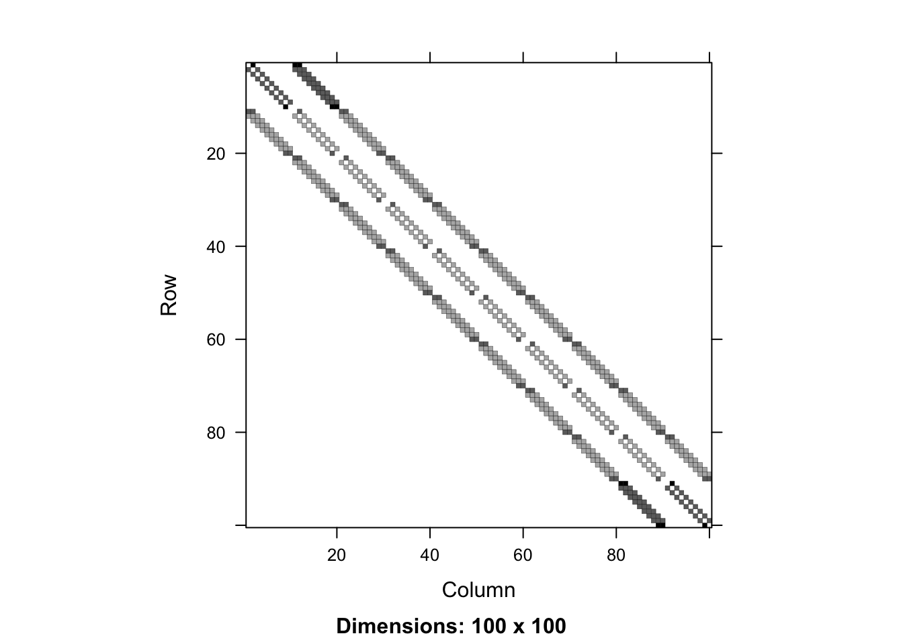
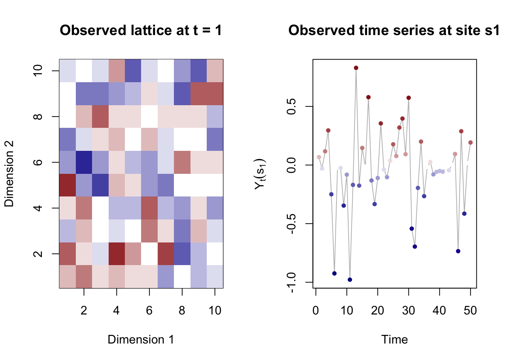

Code used in:
Dynamic Spatiotemporal ARCH Models (arXiv:2202.13856)
Philipp Otto, Osman Dogan, Suleyman Taspinar
Including a toy example how to use the code.
We especially thank Jihai Yu for sharing the MATLAB code used in:
Efficient GMM estimation of spatial dynamic panel data models with fixed effects
Lung-Fei Lee and Jihai Yu
Journal of Econometrics 180(2), 174-197.
Abstract
Geo-referenced data are characterised by an inherent spatial dependence due to the geographical proximity. In this paper, we introduce a dynamic spatiotemporal autoregressive conditional heteroscedasticity (ARCH) process to describe the effects of (i) the log-squared time-lagged outcome variable, i.e., the temporal effect, (ii) the spatial lag of the log-squared outcome variable, i.e., the spatial effect, and (iii) the spatial lag of the log-squared time-lagged outcome variable, i.e., the spatiotemporal effect, on the volatility of an outcome variable. Furthermore, our suggested process allows for the fixed effects over time and space to account for the unobserved heterogeneity. For this dynamic spatiotemporal ARCH model, we derive a generalised method of moments (GMM) estimator based on the linear and quadratic moment conditions of a specific transformation. We show the consistency and asymptotic normality of the GMM estimator, and determine the best set of moment functions. We investigate the finite-sample properties of the proposed GMM estimator in a series of Monte-Carlo simulations with different model specifications and error distributions. Our simulation results show that our suggested GMM estimator has good finite sample properties. In an empirical application, we use monthly log-returns of the average condominium prices of each postcode of Berlin from 1995 to 2015 (190 spatial units, 240 time points) to demonstrate the use of our suggested model. Our estimation results show that the temporal, spatial and spatiotemporal lags of the log-squared returns have statistically significant effects on the volatility of the log-returns.
Model
The outcome variable \(y_{it}\) of region \(i\) at time \(t\) is modeled according to \[\begin{eqnarray}
y_{it} & = & h_{it}^{1/2} \varepsilon_{it},\\
\log h_{it} & = & \sum_{l=1}^p\sum_{j=1}^n \rho_{l0} m_{l,ij} \log y^2_{jt} + \gamma_0 \log y^2_{i,t-1} + \sum_{l=1}^p\sum_{j=1}^n \delta_{l0} m_{l,ij} \log y^2_{j,t-1} \nonumber \\
& & \quad + \mathbf{x}^{'}_{it} \boldsymbol{\beta}_0 + \mu_{i0} + \alpha_{t0},
\end{eqnarray}\] for \(i=1,2,\ldots,n\) and \(t=1,\ldots T\). The spatial locations indexed by \(i = 1, \ldots, n\) are supposed to be on discrete regular (e.g., for image processes) or irregular lattice, also known as spatial polygons. The latter case is typically present in economics, e.g., regional legal units, districts, countries, etc. Here, \(h_{it}\) is considered as the volatility term in region \(i\) at time \(t\), and \(\varepsilon_{it}\) are independent and identically distributed random variables that has mean zero and unit variance. The log-volatility terms follow the process in the equation given above, where \(\{m_{l,ij}\}_{l=1}^p\), for \(i,j=1,\ldots,n\), are the non-stochastic spatial weights. Here, \(p\) is a finite positive integers, and \(\{m_{l,ii}\}_{l=1}^p\) are zero for \(i=1,\ldots,n\). The spatial, temporal and spatiotemporal effects of the log-squared outcome variable on the log-volatility are measured by the unknown parameters \(\gamma_0\), \(\{\rho_{l0}\}_{l=1}^p\), and \(\{\delta_{l0}\}_{l=1}^q\), respectively. Further, \(\mathbf{x}_{it}\) is a \(k\times1\) vector of exogenous variables with the associated parameter vector \(\boldsymbol{\beta}_0\), and the regional and time fixed effects are denoted by \(\boldsymbol{\mu}_0=(\mu_{10},\ldots,\mu_{n0})^{'}\) and \(\boldsymbol{\alpha}_0=(\alpha_{10},\ldots,\alpha_{T0})^{'}\). Both \(\boldsymbol{\mu}_0\) and \(\boldsymbol{\alpha}_0\) can be correlated with the exogenous variables in an arbitrary manner. We assume that the initial value vector \(\mathbf{Y}_0=(y_{10},\ldots,y_{n0})^{'}\) is observable.
Functions for simulation and estimation
Notice that the toy examples to show how the functions can be used is provided in the next section.
Show the function needed for simulation
simulate_dyn_spatiotemporal_ARCH <-function(n, t, W, parameters){ dimW <-dim(W)if(dimW[1] != n | dimW[2] != n){stop("Dimension of W is wrong") }if(length(dimW) ==2){ p <-1 new.W <-array(, dim =c(n,n,p)) new.W[,,1] <- W W <- new.W } else { p <- dimW[3] }# error distributionsif(parameters$errortype =="norm"){ err_distr <-function(n){return(rnorm(n)) } } elseif (parameters$errortype =="t"){ err_distr <-function(n){return(rt(n, df =3)) } }# functions used for simulation (see Otto and Schmid 2019: arXiv:1908.08320) f_inv <-function(x){return(exp(x)) } tau_eps <-function(eps, W_1, alpha, theta, zeta, b){ eps_2 <-log(eps^2) n <-length(eps)return( solve(diag(n) -Matrix(W_1)) %*% alpha + (diag(n) +solve(diag(n) -Matrix(W_1)) %*%Matrix(W_1)) %*% eps_2 ) } # weight matrices rhoW <-array(0, dim =c(n, n)) deltaM <-array(0, dim =c(n, n))for(i in1:p){ rhoW <- rhoW + parameters$rho[i] * W[,,i] deltaM <- deltaM + parameters$delta[i] * W[,,i] }# function to include exogeneous regressions k <-length(parameters$beta) Xbeta <-function(X, beta){if(is.null(beta)){return(0) } else {return(X %*% beta) } }# burn-in period# the first simulations should be discarded to remove the influence of Y_0# here, we choose a burn-in of 20 time points, which balances the required computation time and accuaracy eps <-err_distr(n) mu_i0 <-rnorm(n) alpha_t0 <-rep(rnorm(1), n) *ifelse(parameters$ted, 1, 0) lagged_var <- mu_i0 + alpha_t0 +Xbeta(array(rnorm(k*n), dim =c(n,k)), parameters$beta) tau <-tau_eps(eps = eps, W_1 = rhoW, alpha = lagged_var) X <- lagged_var + rhoW %*% tau Y_00 <-diag(as.vector(f_inv(X)))^(0.5) %*% eps X_regr <-array(rnorm(20*k*n), dim =c(n,20,k)) alpha <- parameters$alpha *rep(1, n) # add temporal lag and regressive termfor(b in1:20){ eps <-err_distr(n) alpha_t0 <-rep(rnorm(1), n) *ifelse(parameters$ted, 1, 0) lagged_var <- mu_i0 + alpha_t0 + parameters$gamma *log(Y_00^2) + deltaM %*%log(Y_00^2) +Xbeta(X_regr[,b,], parameters$beta) tau <-tau_eps(eps = eps, W_1 = rhoW, alpha = lagged_var) X <- lagged_var + rhoW %*% tau Y <-diag(as.vector(f_inv(X)))^(0.5) %*% eps Y_00 <- Y }# simulations which are used later Y <-array(, dim =c(n, t)) X_regr <-array(rnorm(k*n*t), dim =c(n,t,k))for(b in1:t){ eps <-err_distr(n) alpha_t0 <-rep(rnorm(1), n) *ifelse(parameters$ted, 1, 0) lagged_var <- mu_i0 + alpha_t0 + parameters$gamma *log(Y_00^2) + deltaM %*%log(Y_00^2) +Xbeta(X_regr[,b,], parameters$beta) tau <-tau_eps(eps = eps, W_1 = rhoW, alpha = lagged_var) X <- lagged_var + rhoW %*% tau Y[,b] <-diag(as.vector(f_inv(X)))^(0.5) %*% eps Y_00 <- Y[,b] }return(list(Y = Y, X_regr = X_regr, parameters = parameters))}
Show the functions needed for estimation
GMM_SDPD_2SLS_ARCH <-function(Y, X, W, info, silent =TRUE){ ksy = info$ksy # spatial expansion order of y ksx = info$ksx # spatial expansion order of x# checksif(is.null(Y)){stop("Y is missing") }if(is.null(X)){if(!silent){cat("Model without exogenous regressors is fitted \n") } }if(is.null(W)){stop("W is missing") }if(is.null(info)){stop("info is missing") }# expand matrix W when higher-order spatial lags are included dimW <-dim(W) n <- dimW[1]if(length(dimW) ==2){ p <-1 new.W <-array(, dim =c(n,n,p)) new.W[,,1] <- W W <- new.W } else { p <- dimW[3] }if(length(dimW) >3| dimW[1] != dimW[2] | dimW[2] != n){stop("Check W matrix (W must be of dimension n x n x p)") }if(dim(Y)[1] != n |length(dim(Y)) !=2){stop("Y should be a matrix of dimension n x T") }# log-squared transformationif(any(Y ==0)){warning("No zero values of the response variable are allowed in the log-squared transformation. \n All zero values have been replaced with the smallest non-zero entry.") Y <-ifelse(Y ==0, log(min(Y[Y !=0]^2)), log(Y^2)) } Y <-log(Y^2)# spatial and temporal dimensions t <-dim(Y)[2] -1if(!silent){cat("Number of cross-sectional units:", n, "\n")cat("Length of the time series:", t, "\n")cat("Number of spatial lags (weight matrices):", p, "\n") } s <- t -1 nt <- n * t ns <- n * s yt <-as.vector(Y[, 2:(t+1)]) ytl <-as.vector(Y[, 1:(t)]) ysl <-array(0, dim =c(nt,p)) ystl <-array(0, dim =c(nt,p))for(i in1:t){for(j in1:p){ ysl[(1+(i-1)*n):(i*n), j] <- W[,,j] %*% yt[(1+(i-1)*n):(i*n)] ystl[(1+(i-1)*n):(i*n), j] <- W[,,j] %*% ytl[(1+(i-1)*n):(i*n)] } }if(info$stl + info$tl ==2){ xw <-cbind(ytl, ystl); } elseif (info$stl + info$tl ==1){if(info$stl ==1){ xw <- ystl } else { xw <- ytl } } elseif (info$stl + info$tl ==0){stop("No spatial and no temporal lag given") } else {stop("Double-Check stl & tl # in Info structure") } X_stacked <-NULL W1hx <-NULL MHX <-NULLif(!is.null(X)){for(i in1:t){ X_stacked <-rbind(X_stacked, X[,i+1,]) }if(dim(X)[3] ==1){ X_stacked <-array(X_stacked, dim =c(length(X_stacked), 1)) } } xs <- X_stacked; xt <-cbind(xw, xs) zt <-cbind(ysl, xt) kz <-dim(zt)[2] kx <-dim(xt)[2] kxs <-dim(xs)[2] kxw <-dim(xw)[2]# transformation F c <-sqrt((t-(1:s))/(t-(1:s)+1)) F <-diag(t) F <- F[, 1:(t-1)]for(i in1:(t-1)){ F[(i+1):t, i] <--1/(t-i); F[, i] <- c[i] * F[,i] } hyt <-array(yt, dim =c(n,t)) hyt <- hyt %*% F hyt <-as.vector(hyt); hytl <-array(ytl, dim =c(n,t)) hytl <- hytl %*% F hytl <-as.vector(hytl) hysl <-array(ysl, dim =c(n,t,p)) hysltemp <-array(0, dim =c(n,t-1,p))for(i in1:p){ hysltemp[,,i] <- hysl[,,i] %*% F } hysl <-array(hysltemp, dim =c(ns,p)) hystl <-array(ystl, dim =c(n,t,p)) hystltemp <-array(0, dim =c(n,t-1,p))for(i in1:p){ hystltemp[,,i] <- hystl[,,i] %*% F } hystl <-array(hystltemp, dim =c(ns,p))if(!is.null(X_stacked)){ kx <-dim(X_stacked)[2] hx <-array(X_stacked, dim =c(n,t,kx)) hxtemp <-array(0, dim =c(n,t-1,kx))for(i in1:kx){ hxtemp[,,i] <- hx[,,i] %*% F } hx <-array(hxtemp, dim =c(ns,kx)) } else { hx <-NULL }if(info$stl + info$tl ==2){ hxw <-cbind(hytl, hystl); } elseif(info$stl + info$tl ==1){if(info$stl ==1){ hxw <- hystl } else { hxw <- hytl } } elseif(info$stl + info$tl ==0){stop("no spatial and temporal lag given, check suitability") } else {stop("Doube-check info$stl and info$tl") } pyid <-array(0, dim =c(ksy,2)) pa <-1 pb <- p pyid[1,] <-c(pa, pb)for(k in2:ksy){ pa <- pa + p^(k-1) pb <- pb + p^k pyid[k,] <-c(pa, pb) } WY <-array(0, dim =c(nt, pyid[ksy,2])); WY[, 1:p] = ystlfor(i in1:t){for(k in1:(ksy-1)){for(j in1:p){ WY[(1+(i-1)*n):(i*n), (pyid[k,2] +1+ (j-1)*p^k):(pyid[k,2]+j*p^k)] <- W[,,j] %*% WY[(1+(i-1)*n):(i*n), pyid[k,1]:pyid[k,2]] } } }if(!is.null(X_stacked)){ kx <-dim(X_stacked)[2] W1hx <-array(0, dim =c(ns,kx*p))for(i in1:s){for(j in1:p){ W1hx[(1+(i-1)*n):(i*n), (1+(j-1)*kx):(j*kx)] <- W[,,j] %*% hx[(1+(i-1)*n):(i*n),] } } pxid <-array(0, dim =c(ksx,2)) pa <-1 pb <- p*kx pxid[1,] <-c(pa, pb)for(k in2:ksx){ pa <- pa + p^(k-1)*kx pb <- pb + p^k*kx pxid[k,] <-c(pa, pb) } WHX <-array(0, dim =c(ns, pxid[ksx,2]*kx)) WHX[,1:(p*kx)] <- W1hx;for(i in1:s){for(k in1:(ksx-1)){for(j in1:p){ WHX[(1+(i-1)*n):(i*n), (pxid[k,2]+1+(j-1)*p^k*kx):(pxid[k,2]+j*p^k*kx)] <- W[,,j] %*% WHX[(1+(i-1)*n):(i*n), pxid[k,1]:pxid[k,2]] } } } }## Following is the IV without interaction term pyid <-array(0, dim =c(ksy,2)) pa <-1 pb <- p pyid[1,] <-c(pa, pb)for(k in2:ksy){ pa <- pa + p pb <- pb + p pyid[k,] <-c(pa, pb) } MY <-array(0, dim =c(nt, pyid[ksy,2])) MY[,1:p] <- ystl;for(i in1:t){for(k in1:(ksy-1)){for(j in1:p){ MY[(1+(i-1)*n):(i*n), (pyid[k,2]+j):(pyid[k,2]+j)] <- W[,,j] %*% MY[(1+(i-1)*n):(i*n), (pyid[k,1]-1+j):(pyid[k,1]-1+j)] } } }if(!is.null(X_stacked)){ kx <-dim(X_stacked)[2] pxid <-array(0, dim =c(ksx,2)) pa <-1 pb <- p*kx pxid[1,] <-c(pa, pb)for(k in2:ksx){ pa <- pa + p*kx pb <- pb + p*kx pxid[k, ] <-c(pa, pb) } MHX <-array(0, dim =c(ns,pyid[ksx,2]*kx)) MHX[,1:(p*kx)] <- W1hxfor(i in1:s){for(k in1:(ksx-1)){for(j in1:p){ MHX[(1+(i-1)*n):(i*n),(pxid[k,2]+1+(j-1)*kx):(pxid[k,2]+j*kx)] <- W[,,j] %*% MHX[(1+(i-1)*n):(i*n),(pxid[k,1]+(j-1)*kx):(pxid[k,1]-1+j*kx)] } } } } Qw <-cbind(ytl, WY) Qw_alt <-cbind(ytl, MY)if(ksx ==0){ Qs <-NULL Qs_alt <-NULL qs <-0 qs_alt <-0 } else { Qs <-cbind(hx, W1hx) Qs_alt <-cbind(hx, MHX) qs <-dim(Qs)[2] qs_slt <-dim(Qs_alt)[2] } Qw <- Qw[1:ns,] Qw_alt <- Qw_alt[1:ns,] qw <-dim(Qw)[2] qw_alt <-dim(Qw_alt)[2] Q <-cbind(Qw, Qs) Q_alt <-cbind(Qw_alt, Qs_alt) kq <-dim(Q)[2] kq_alt <-dim(Q_alt)[2] hxs <- hx hxt <-cbind(hxw, hxs) hzt <-cbind(hysl, hxt) Qhz <-array(0, dim =c(kq, kz)) QQ <-array(0, dim =c(kq, kq)) Qhy <-array(0, dim =c(kq, 1)) Qhz_alt <-array(0, dim =c(kq_alt, kz)) QQ_alt <-array(0, dim =c(kq_alt, kq_alt)) Qhy_alt <-array(0, dim =c(kq_alt, 1)) Jn <-diag(n) -array(1/n, dim =c(n,n))for(i in1:s){if(info$ted ==1){ Qhz <- Qhz +t(Q[(1+(i-1)*n):(i*n),]) %*% Jn %*% hzt[(1+(i-1)*n):(i*n),] QQ <- QQ +t(Q[(1+(i-1)*n):(i*n),]) %*% Jn %*% Q[(1+(i-1)*n):(i*n),] Qhy <- Qhy +t(Q[(1+(i-1)*n):(i*n),]) %*% Jn %*% hyt[(1+(i-1)*n):(i*n)] Qhz_alt <- Qhz_alt +t(Q_alt[(1+(i-1)*n):(i*n),]) %*% Jn %*% hzt[(1+(i-1)*n):(i*n),] QQ_alt <- QQ_alt +t(Q_alt[(1+(i-1)*n):(i*n),]) %*% Jn %*% Q_alt[(1+(i-1)*n):(i*n),] Qhy_alt <- Qhy_alt +t(Q_alt[(1+(i-1)*n):(i*n),]) %*% Jn %*% hyt[(1+(i-1)*n):(i*n)] } else { Qhz <- Qhz +t(Q[(1+(i-1)*n):(i*n),]) %*% hzt[(1+(i-1)*n):(i*n),] QQ <- QQ +t(Q[(1+(i-1)*n):(i*n),]) %*% Q[(1+(i-1)*n):(i*n),] Qhy <- Qhy +t(Q[(1+(i-1)*n):(i*n),]) %*% hyt[(1+(i-1)*n):(i*n)] Qhz_alt <- Qhz_alt +t(Q_alt[(1+(i-1)*n):(i*n),]) %*% hzt[(1+(i-1)*n):(i*n),] QQ_alt <- QQ_alt +t(Q_alt[(1+(i-1)*n):(i*n),]) %*% Q_alt[(1+(i-1)*n):(i*n),] Qhy_alt <- Qhy_alt +t(Q_alt[(1+(i-1)*n):(i*n),]) %*% hyt[(1+(i-1)*n):(i*n)] } } theta <-mldivide(t(Qhz) %*%ginv(QQ) %*% Qhz, t(Qhz) %*%ginv(QQ) %*% Qhy) theta_alt <-mldivide(t(Qhz_alt) %*%ginv(QQ_alt) %*% Qhz_alt, t(Qhz_alt) %*%ginv(QQ_alt) %*% Qhy_alt) e <- hyt - hzt %*% theta e_alt <- hyt - hzt %*% theta_altif(info$ted ==1){for(i in1:s){ e[(1+(i-1)*n):(i*n)] <- Jn %*% e[(1+(i-1)*n):(i*n)] e_alt[(1+(i-1)*n):(i*n)] <- Jn %*% e_alt[(1+(i-1)*n):(i*n)] } } sigma2 <-mean((e-mean(e))^2) sigma4 <-mean((e-mean(e))^4) sigma2_alt <-mean((e_alt-mean(e_alt))^2) sigma4_alt <-mean((e_alt-mean(e_alt))^4) lambda <- theta[1:p] delta <- theta[(p+1):kz] lambda_alt <- theta_alt[1:p] delta_alt <- theta_alt[p+1:kz] lambdaW <-array(0, dim =c(n,n)) lambdaW_alt <-array(0, dim =c(n,n))for(j in1:p){ lambdaW <- lambdaW + lambda[j] * W[,,j] lambdaW_alt <- lambdaW_alt + lambda_alt[j] * W[,,j] } Sn <-diag(n) - lambdaW Sn_alt <-diag(n) - lambdaW_alt DSiD <-1/(sigma2*ns) *t(Qhz) %*%ginv(QQ) %*% Qhz DSiD_alt <-1/(sigma2_alt*ns) *t(Qhz_alt) %*%ginv(QQ_alt) %*% Qhz_alt SIG <-tryCatch(1/ns *solve(DSiD), error =function(e){cat("DSiD not invertible \n"); return(array(NA, dim =dim(DSiD)))})# SIG <- 1/ns * solve(DSiD); std <-sqrt(abs(diag(SIG))) tstat <- theta/std SIG_alt <-tryCatch(1/ns *solve(DSiD_alt), error =function(e){cat("DSiD_alt not invertible \n"); return(array(NA, dim =dim(DSiD_alt)))})# SIG_alt <- 1/ns * solve(DSiD_alt) std_alt <-sqrt(abs(diag(SIG_alt))) tstat_alt <- theta_alt/std_alt results <-list(theta = theta, std = std, SIG = SIG, tstat = tstat, sigma2 = sigma2,theta_alt = theta_alt, std_alt = std_alt, SIG_alt = SIG_alt, tstat_alt = tstat_alt, sigma2_alt = sigma2_alt,e =array(e, dim =c(n, t)), e_alt =array(e_alt, dim =c(n, t)), hyt =array(hyt, dim =c(n, t)))return(results)}mldivide <-function(A, b){return(ginv(t(A) %*% A) %*%t(A) %*% b)# return(qr.solve(A, b))}
Toy example
For example 1, we simulate a dynamic spatiotemporal ARCH process with \(n = 100\) locations on a two-dimensional \(10 \times 10\) spatial lattice at \(t = 50\) time points. The parameters are chosen as follows: \(\rho = 0.4\), \(\gamma = 0.2\), \(\delta = 0\) (i.e., no spatiotemporal lag). The weight matrix is chosen as Queen’s contiguity matrix. Furthermore, we include temporal fixed effects in the volatility (parameters$ted = 1) and standard normal errors (parameters$errortype = "norm"). For example 2, two exogenous regressors are simulated from a standard normal distribution with \(\boldsymbol{\beta} = (0.5, 1.2)'\).
set.seed(5515)## definition of general setting and weight matrixlibrary("spdep")
Loading required package: sp
Loading required package: spData
To access larger datasets in this package, install the spDataLarge
package with: `install.packages('spDataLarge',
repos='https://nowosad.github.io/drat/', type='source')`
Loading required package: sf
Linking to GEOS 3.10.2, GDAL 3.4.2, PROJ 8.2.1; sf_use_s2() is TRUE
library("MASS")library("Matrix")library("gplots")
Attaching package: 'gplots'
The following object is masked from 'package:stats':
lowess
library("classInt")d <-10n <- d^2t <-50W <-nb2mat(cell2nb(d, d, type ="queen"))image(Matrix(W))

## Example 1parameters <-list()parameters$rho <-0.4parameters$gamma <-0.2parameters$delta <-0parameters$ted <-1parameters$errortype <-"norm"parameters$beta <-NULL# simulationsim <-simulate_dyn_spatiotemporal_ARCH(n, t, W = W, parameters = parameters)# visualisationcolours <-colorpanel(20, "darkblue","white", "darkred") colbreaks <-classIntervals(sim$Y, n =length(colours), style ="quantile")# seq(min(sim$Y), max(sim$Y), length = length(colours) + 1)par(mfcol =c(1, 2))image(1:d, 1:d, array(sim$Y[, 1], dim =c(d, d)), col = colours, breaks = colbreaks$brks, main ="Observed lattice at t = 1",xlab ="Dimension 1", ylab ="Dimension 2")plot(1:t, sim$Y[1, ], type ="l", col ="grey",main ="Observed time series at site s1", xlab ="Time", ylab =expression(Y[t](s[1])))points(1:t, sim$Y[1, ], pch =20,col = colours[cut(sim$Y[1, ], colbreaks$brks)])

# estimationest <-GMM_SDPD_2SLS_ARCH(Y = sim$Y, X =NULL, W = W, info =list(ksy =10, ksx =10, stl =0, tl =1, ted =1), silent =FALSE)
Model without exogenous regressors is fitted
Number of cross-sectional units: 100
Length of the time series: 49
Number of spatial lags (weight matrices): 1
# no spatiotemporal lag: info = list(stl = 0)# temporal lag included: info = list(tl = 1)# temporal fixed effects included: info = list(ted = 1)# Estimated parametersest$theta # rho, gamma
[,1]
[1,] 0.5045788
[2,] 0.1905222
# Standard errorsest$std
hxw
0.14797810 0.01731802
# t-statisticsest$tstat
[,1]
[1,] 3.409821
[2,] 11.001379
## Example 2parameters <-list()parameters$rho <-0.4parameters$gamma <-0.2parameters$delta <-0.4parameters$ted <-1parameters$errortype <-"norm"parameters$beta <-c(0.5, 1.1)# simulationsim <-simulate_dyn_spatiotemporal_ARCH(n, t, W = W, parameters = parameters)# estimationest <-GMM_SDPD_2SLS_ARCH(Y = sim$Y, X = sim$X_regr, W = W, info =list(ksy =10, ksx =10, stl =1, tl =1, ted =1))# Estimated parametersest$theta # rho, gamma, delta, beta
par(mfcol =c(1, 2))plot(density(results[1,]), col ="red")abline(v = parameters$rho, col ="red")plot(density(results[2,]), col ="blue")abline(v = parameters$gamma, col ="blue")